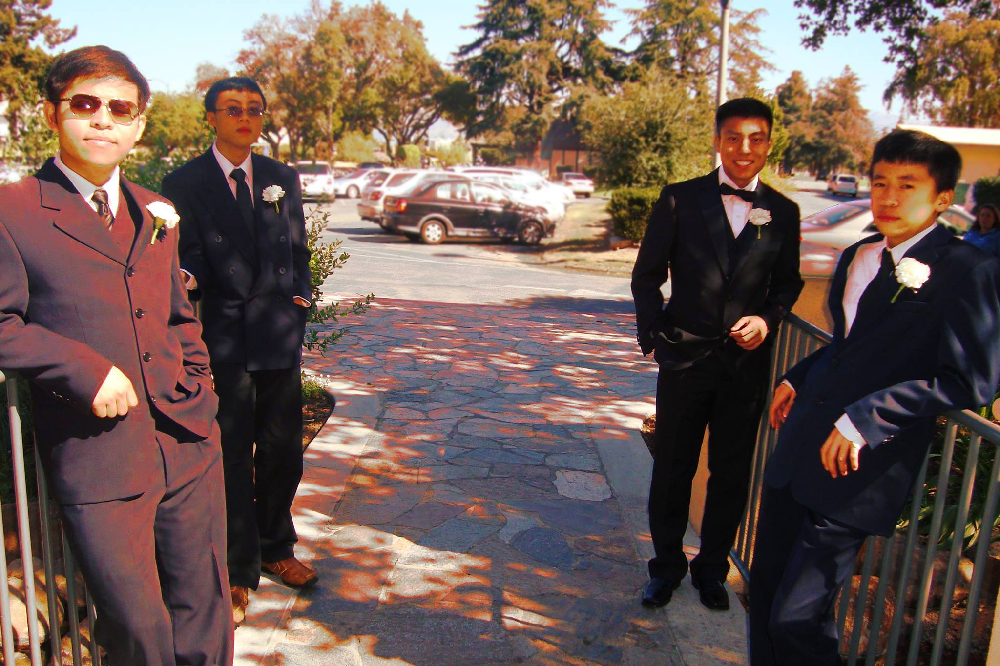

When I was seventeen, I kicked off my senior year of high school on a pretty strong foot, when one of my aunts suddenly fell ill. Death, having no favorites, pried her soul away from us and the rift it opened in my extended family has never closed.
Now, every time my family comes together for a gathering, her memory still lingers. Time has somewhat numbed the pain, but there's still a frustrating emptiness I feel that comes from knowing that she's gone, and there's nothing I can do to change that fact.
I've only been able to cope by trying not to think of her, but I can only imagine how much harder it must be for my other aunts and uncles who've known her for so much longer than I have.
I had to face a hard reality about a girl I used to hold dearly in my memory. I didn't want to accept it, but it soon became clear to me that as the years passed, she and I had diverged from the starry-eyed young middle schoolers that we once were.
I was very upset at first, and felt frustrated with myself because I believed I'd wasted a massive amount of time. In retrospect, I could have spent the time nurturing other friendships, acquiring other skills, and probably studying more intensely. But hey, hindsight is 20/20. I prefer to think of it as a lesson that took a few years to learn. Now that she's gone, I started thinking...
During the funeral, my cousins took a couple of photos, and just out of curiosity, I tried my hand at editing them in a program called GIMP to see if I could get an "old photo" look out of them. They weren't spectacular, but I enjoyed the process so much that I thought to myself, why not try practicing this a little more seriously?
Looking back, I can't help but laugh at how silly and oversaturated it looks, but to my old untrained eyes this shot looked pretty cool when I first worked on it.